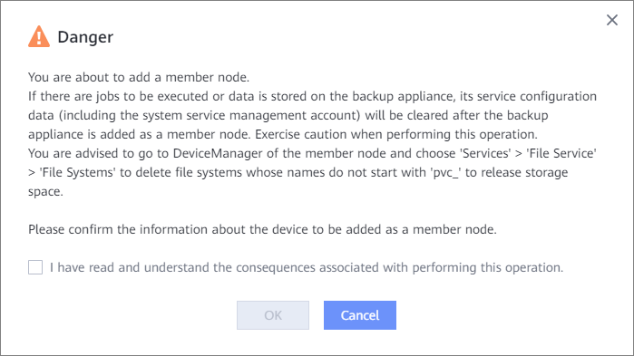

This section describes how to add a member node. After a member node is added, backup copies can be stored on the backup storage corresponding to the member node. For 1.6.0 and later versions, Internal Communication Network Plane is renamed as Internal Communication Network. This section uses 1.5.0 as an example.
Service configuration data will be cleared after the OceanProtect, where there are jobs to be executed or data is stored, is added as a member node. Exercise caution when performing this operation.
Parameter |
Description |
|---|---|
Name |
Name of the backup node to be added. |
IP Address |
Management IP address of the backup node. |
Port |
Management port of the backup node. The default port ID is 25081. |
Username |
Username of the system administrator of the backup node, for example, sysadmin. |
Password |
Password of the system administrator of the backup node. |
Internal Communication Network Plane Name NOTE:
This parameter applies only to 1.5.0. |
Name of the internal communication network plane of the backup node. This network plane can reuse the backup network plane. |
